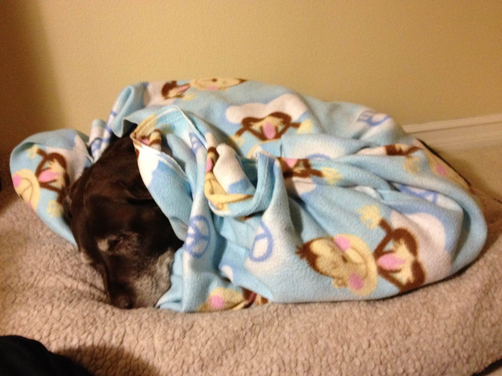
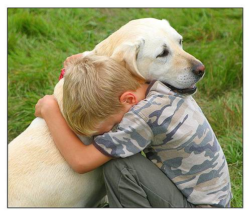
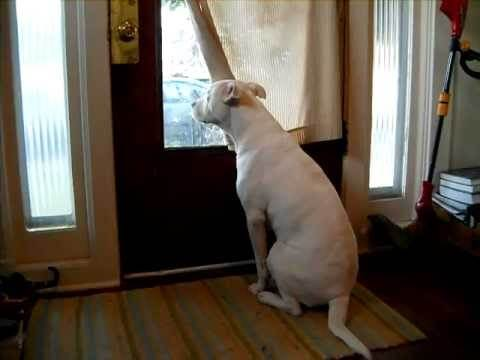
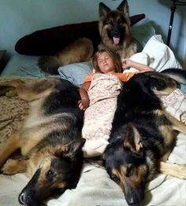
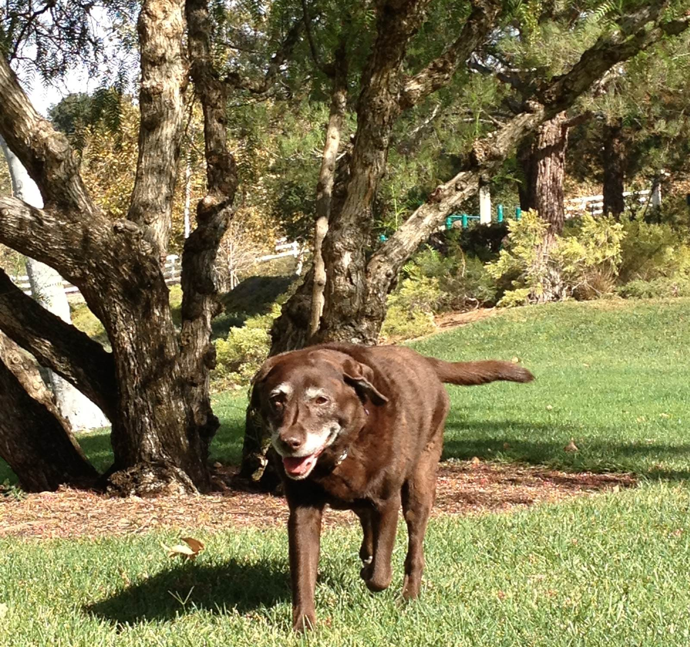
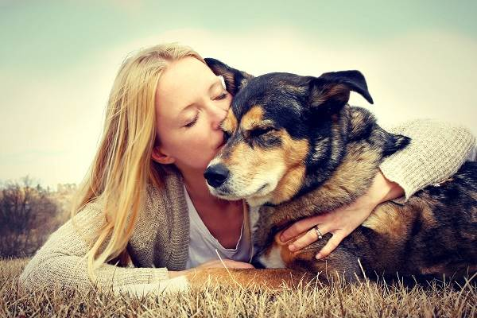
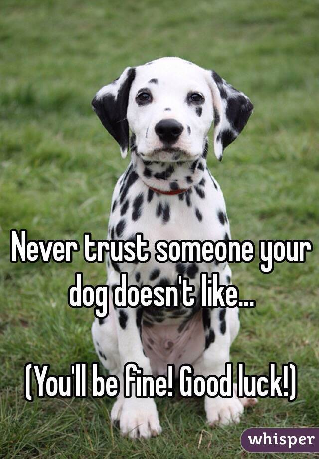
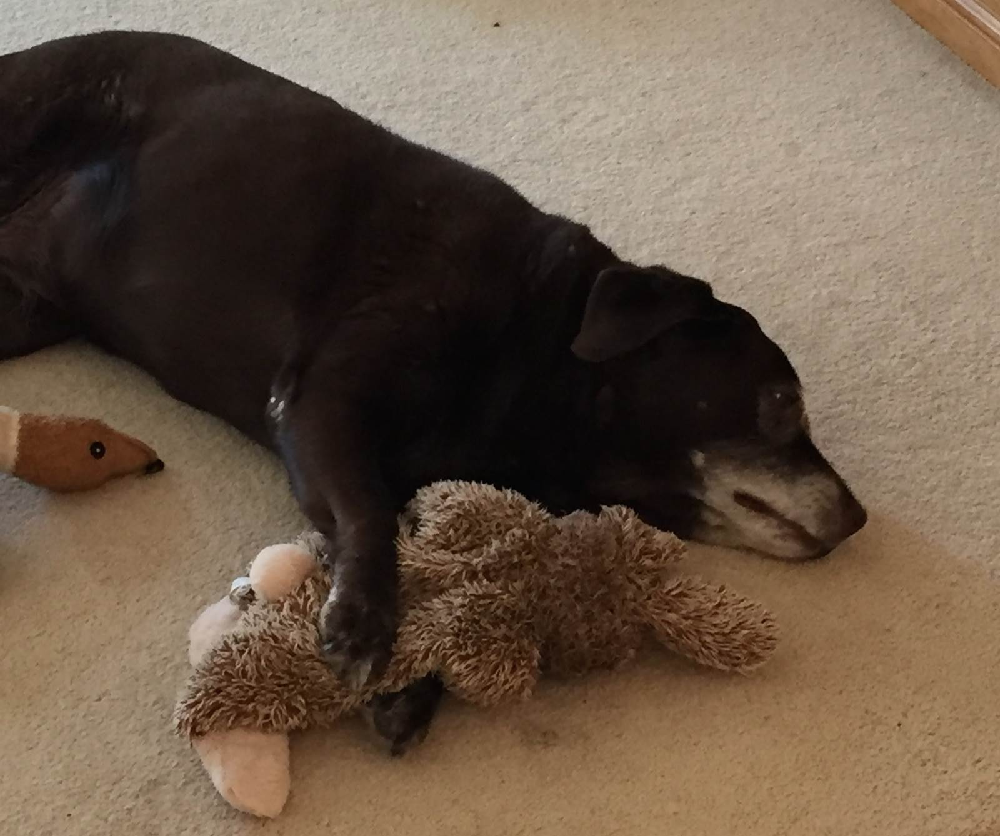
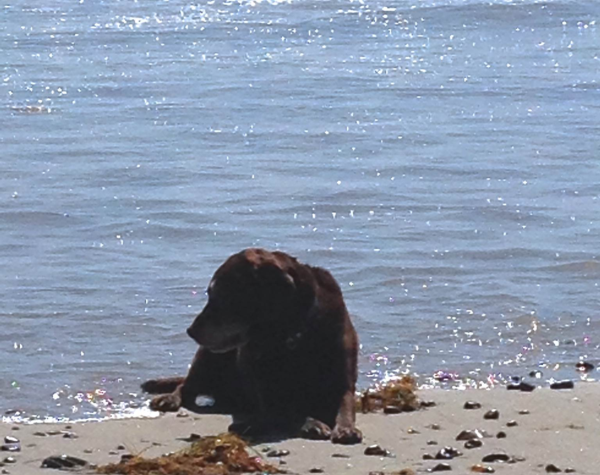

REASONS WHY I LOVE DOGS
1.They always want to cuddle.

Want to take a nap? Need a moment of comfort?No matter the reason, dogs are the perfect cuddle-buddy. They will keep you warm and always make you feel safe during your cuddle session.
2.Without fail, they are always the first to comfort you.

Dogs seem to always be the first ones to notice when you are having a bad day. With the right cute face and licking of the hand, they are continuously able to make you feel better.
3.No one is more excited to see you when you come home

Whether it be when you just wake up, or when you come home for the night, dogs are the first to greet you and are overjoyed to see you. They seem to have a knack for making you feel special and loved.
4.They are the most reliable protectors.

There is no one that I trust more than a protective dog. They always have your back and will never let you down. The safest place to be is behind a loyal, protective dog.
5.Since they need to be walked daily, they keep you in shape.

If you are anything like me, exercise tends to be the last thing on your to do list. I usually don't get around to it. Having a dog forces me to get off my lazy butt and take a walk.
6.They will never judge or criticize you.

As the loving creatures they are, dogs will never judge us for our mistakes.
7.You always know to not trust someone your dog doesn't like.

Just because people aren't the best judges of character sometimes doesn't mean that dogs are the same way. If your dog does not like someone, always trust them because a dog's instincts are never wrong.
8. Once you see their puppy dog face, you can't be mad at them anymore.
As much as we love these furry friends, they can be little trouble makers at times. Once they pull out their adorable puppy dog face, we are all doomed. There is no mess they can make that we won't forgive because they are just so cute.
9. You'll never be lonely with a cute dog around.

They never allow you to feel lonely. Between wanting to play, cuddle, and just wanting to be around us, dogs always make us feel loved and happy.
10. They truly are a person's best friend.

There is no one that I love more than my dog. Dogs are loyal to the bone and will always do anything to make us happy. My dog Roxy is my best friend, and I hope everyone else has a friend like a dog to love as well.